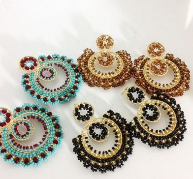
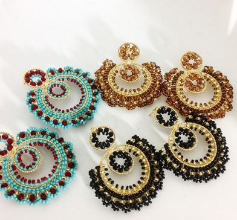
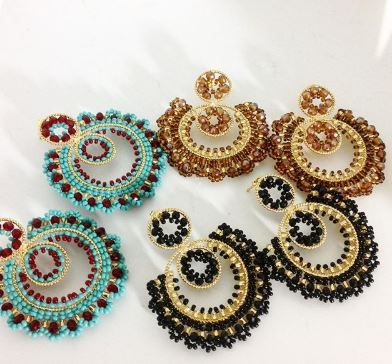

La mostacilla cheka, como se conoce actualmente. es el resultado de la vision ancestral de nuestros pueblos indigenas y el fuerte lazo de conocimiento y respeto hacia lo divino en diferentes puntos del mundo.
Se deriva de los chamanes hichol, quien por medio de la ingesta del peyote
(HIKURI) le atribuyen la llave, al lumbrar de lo mistico y la sabiduria divina.
Nuestros emberas de las tribus: ( KATIO,CHAMI y DOBIDA) comparten esta misma tecnica ansestrales, donde por medio de simbologias, dan el mensaje de nuestra madre tierra.


 
